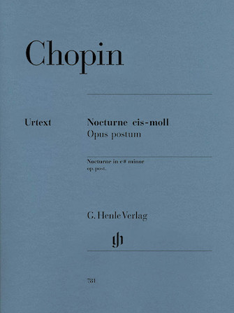

4:26 · 1 OPERA
The silence between the notes: Chopin's Nocturne in C-sharp minor.
Il contenuto del filmato
Una breve ripresa televisiva di concerto presenta un pianista al centro di una sala monumentale, alternando dettagli delle mani, vedute del palco e primi piani del pubblico. Un cartello ECHO Klassik attribuisce a Chopin il Notturno postumo in do diesis minore; un pannello laterale reca il nome Menahem Pressler. La regia costruisce una relazione visiva fra esecuzione e ascoltatori. Questa scheda descrive soltanto i fotogrammi esaminati: non valuta l’interpretazione musicale e non deduce le emozioni del pubblico.
Opere e riferimenti

Notturno in do diesis minore, op. postuma (Lento con gran espressione, WN 37)
Copertina dello spartito Henle HN781, non della registrazione: G. Henle Verlag, HN781, Ewald Zimmermann, spartito per pianoforte
Copertina autentica dello spartito singolo Henle HN781, a cura di Ewald Zimmermann, in due versioni della medesima opera KK IVa,16. Non copertina di una registrazione né spartito identificato sul leggio; il campione non permette di stabilire quale variante sia eseguita.
Cartello nei fotogrammi 49, 50 e 52,5 secondi: Chopin, Notturno op. postuma in do diesis minore; identificazione WN 37 da catalogo primario.
Passaggio 0:49 ↗ · Fonti e libro ↗La descrizione riguarda alcune immagini del filmato. Il sonoro non è verificato; le didascalie visibili non attestano le parole pronunciate.